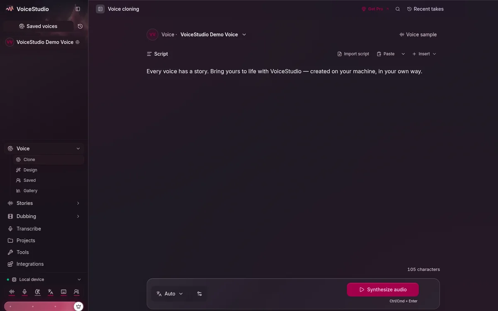
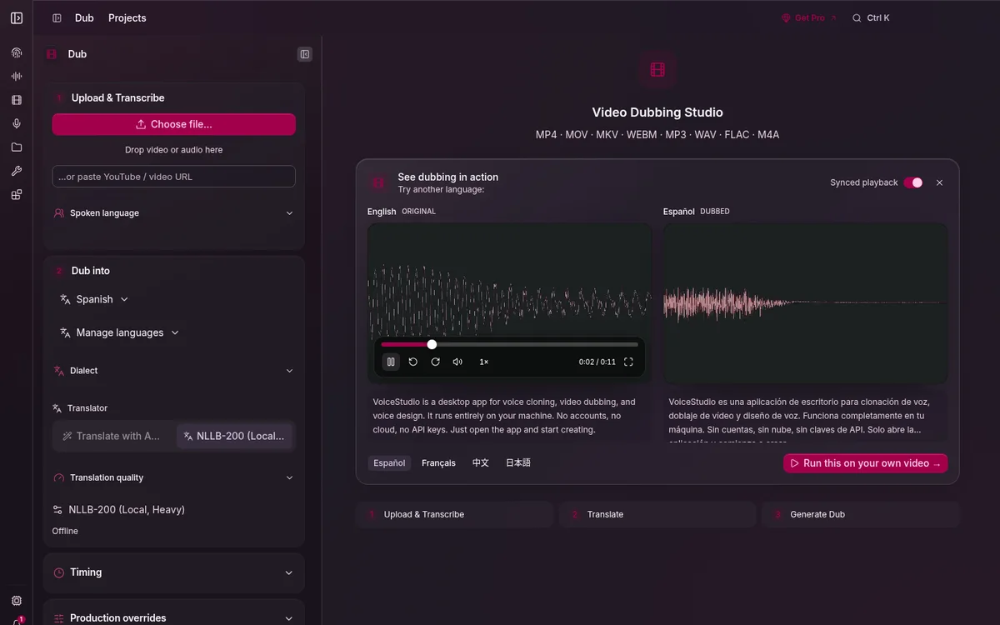
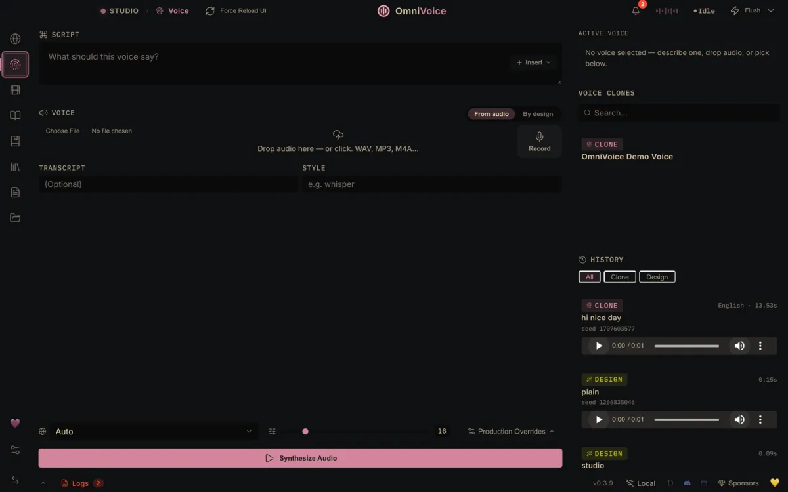
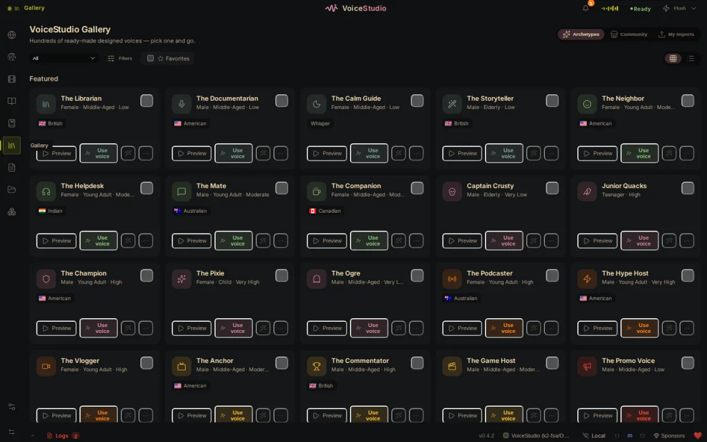
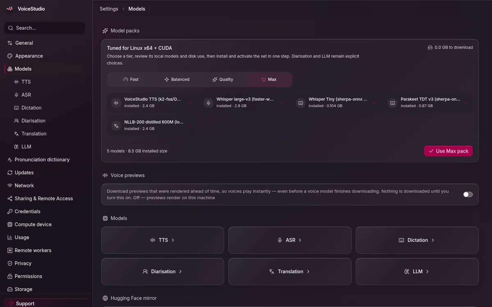
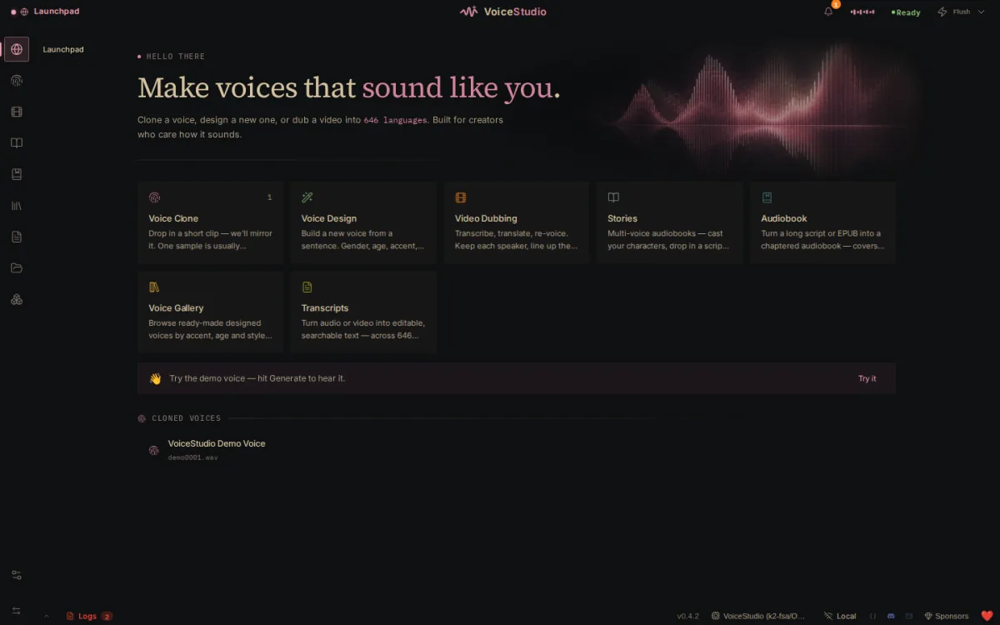

Run the ElevenLabs alternative on a free GPU
VoiceStudio’s full voice studio — cloning, dubbing, text-to-speech and transcription — running on a free Google Colab T4. Your computer only draws the interface.
Why this exists
VoiceStudio is a free, AGPL-3.0, open-source AI voice studio — a genuine ElevenLabs alternative with voice cloning, video dubbing and 646 languages. It is #1 on GitHub Trending with 50k+ stars.
The catch: it assumes your PC has a GPU. This repo removes that requirement. You get a free T4 from Google Colab, and the desktop app connects to it.
| ElevenLabs Cloud | VoiceStudio Pro | This repo | |
|---|---|---|---|
| Cost | from $6/mo | $99/yr | Free |
| GPU needed | none | yes, yours | none — free Colab T4 |
| Voice cloning | yes | yes | yes |
| Video dubbing | yes | yes | yes |
| Languages | 74 on paid | 646 | 646 |
| Your audio | uploaded | stays local | stays local |
| Source code | closed | closed | open (AGPL-3.0) |
That middle column is the point: VoiceStudio's own paid Pro plan sells "remote GPU workers" and "multiple devices". This does the same thing, free.
Screenshots
The real app, running on a free Colab T4 — your PC shows this, the GPU is somewhere else entirely.
 Voice cloning — clone a voice from 3 seconds |
 Video dubbing — per-speaker transcript and language columns |
 Studio — script, style controls, synthesize |
 Voice gallery — ready-made voices with previews |
 Model catalogue — every model with status and install actions |
 Launchpad — one screen for every workflow |
Screenshots of debpalash/VoiceStudio, the AGPL-3.0 app this repo configures.
Quick start
1. On your PC — one command installs the desktop app, the launcher, the icon and the desktop entry, all from this repository:
curl -fsSL https://raw.githubusercontent.com/NurMohammadDuari/VoiceStudio-Colab-GPU/main/install.sh | sh
2. On Colab — open
notebook/VoiceStudio-Colab-GPU.ipynb,
set Runtime → Change runtime type → T4 GPU, then Runtime → Run all.
3. Pair — scroll to the end of the output: it prints a URL and an API key. Double-click the VoiceStudio icon, paste the URL, then paste the key (it is already on your clipboard).
The installer lives here, not at
voicestudio.sh. It downloads the official AGPL-3.0 release fromdebpalash/VoiceStudioand verifies it against that release'sSHA256SUMS.txt. Runsh scripts/install-app.sh --checkto see what it would install without downloading anything.
Full walkthrough: docs/INSTALL.md
What you get
| Feature | Status |
|---|---|
| 🎙️ Voice cloning — clone a voice from 3 seconds of audio | works (OmniVoice) |
| 🎨 Voice design — describe a voice, get it | works |
| 🎬 Video dubbing — any video, any language, same timing | works (optional speaker-diarisation box) |
| 📝 Text-to-speech / TTS at Max quality (64 steps) | works |
| 🎧 Dictation & transcription | works (faster-whisper large-v3) |
| 🌍 Translation in 646 languages | works (NLLB) |
| 📚 Audiobooks & Stories | works |
| 🧩 Local API (OpenAI-compatible) + MCP server | works |
| ⚡ GPU Turbo — FlashInfer CUDA graphs, ~2× faster | on by default |
| 🔓 Every settings panel, model install, engine switch | unlocked by the API key |
| 💾 Save audio/video to your PC | works (direct HTTPS download) |
How it works
YOUR PC COLAB (free T4) PUBLIC
┌──────────────┐ HTTPS ┌────────────────────┐
│ VoiceStudio │───────────▶│ backend :3900 │
│ (UI only) │◀───────────│ OmniVoice + Whisper│
│ │ │ + NLLB + pyannote │
└──────────────┘ └─────────┬──────────┘
│ 127.0.0.1
▼
cloudflared quick tunnel
(random *.trycloudflare.com URL)
Deep dive: docs/ARCHITECTURE.md
Use cases
- Dubbing videos into other languages on a budget
- Audiobooks from a text file, on a GPU you don't own
- Voice cloning for narration, prototypes and accessibility
- Transcribing meetings, lectures and interviews
- Learning the ElevenLabs API on your own hardware, for free
- Trying GPU text-to-speech before renting an actual GPU
When Colab restarts
Colab recycles its VM — that is normal.
| What happened | What to run | Re-paste |
|---|---|---|
| Tab reconnected, kernel restarted | box 2 | new URL (key unchanged) |
Fresh VM (/content wiped) |
box 1 → box 2 | new URL (key unchanged) |
| Lost the URL/key | box 4 | reprint |
Models, settings, cloned voices and your API key persist to Google Drive, so a reset no longer means a 5 GB re-download.
Documentation
| Document | What's inside |
|---|---|
| 📖 INSTALL.md | Step-by-step setup for first run and every run after |
| 🏗 ARCHITECTURE.md | Components, environment variables, the key handshake |
| 🔍 HOW-IT-WORKS-IN-THE-APP.md | Source analysis: security gates, routes, tiers, licences |
| 🛟 TROUBLESHOOTING.md | Every error message → what it means → how to fix it |
| 🔒 SECURITY.md | Threat model, key handling, residual risks |
| ❓ FAQ.md | Cost, privacy, speed, commercial use |
Honest limits
- Colab caps GPU hours and disconnects idle tabs. Nothing fixes that from outside — for 24/7, rent a GPU box (RunPod, Vast.ai); nothing else changes.
- The free T4 is Turing (sm75), so GPU Turbo may not be available there. The notebook detects this and continues without it.
- The default model is CC-BY-NC — personal and research use, not resale.
- A few buttons stay disabled: they act on the backend host's filesystem, which can never be your PC over a tunnel. Saving audio is unaffected.
Contributing
Issues and pull requests are welcome — see CONTRIBUTING.md. Especially useful: reports of which platforms/CUDA builds work, and translations of the docs.
If this saved you money, a ⭐ star helps other people find it.
License
AGPL-3.0 — matching the VoiceStudio app it configures. This repository contains only a notebook, a launcher and documentation; the application itself is not vendored here.
Related
- debpalash/VoiceStudio — the app
- VoiceStudio Pro / Cloud
- ElevenLabs — the hosted commercial alternative